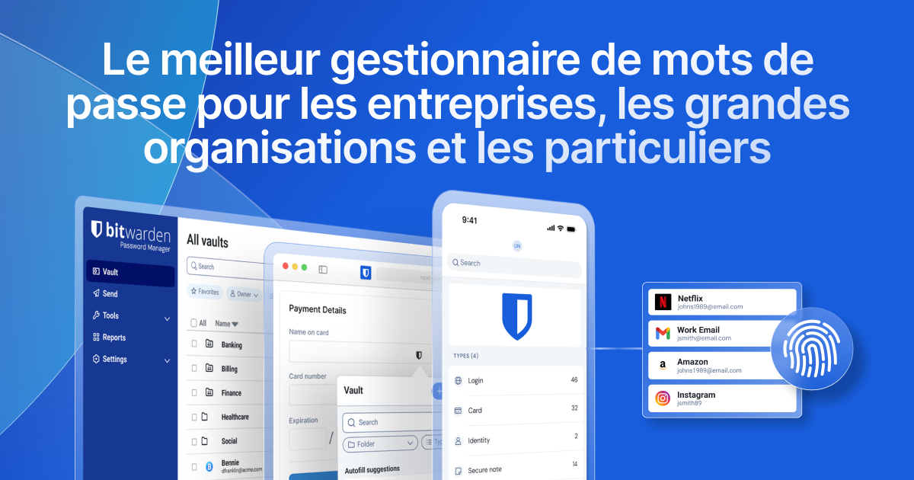
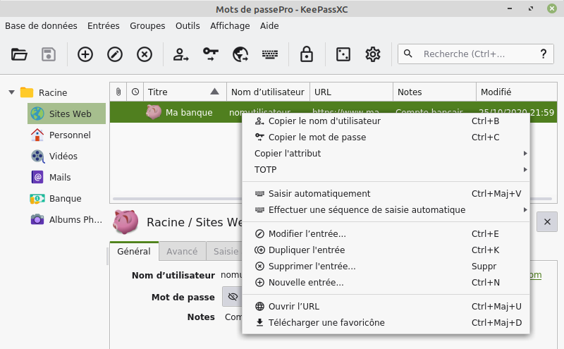

La fin des mots de passe mémorisés : Quel gestionnaire choisir pour votre entreprise ?
Post-it sous le clavier, carnet dans le tiroir, ou pire : le fameux "PrenomAnnee!" utilisé sur absolument tous vos comptes professionnels et personnels. Si vous vous reconnaissez dans ces habitudes, votre activité est vulnérable.
Aujourd'hui, retenir des dizaines de mots de passe complexes est humainement impossible. C'est là qu'intervient le gestionnaire de mots de passe. Véritable coffre-fort numérique, il mémorise tout à votre place et sécurise vos accès. Face à la multitude de solutions, laquelle choisir pour une TPE/PME ou un cabinet de soins ?
Bitwarden : Le champion du Cloud et du travail en équipe

Pour la majorité des PME, Bitwarden est aujourd'hui la solution de référence. Contrairement à des outils grand public, il est Open Source. Son code est public et audité par des experts, garantissant l'absence de failles cachées.
✓ Avantages
- Synchronisation fluide sur tous vos appareils (PC, Mac, Smartphone).
- Partage sécurisé en équipe (idéal pour partager l'accès à un outil sans dévoiler le mot de passe).
- Version gratuite extrêmement généreuse pour un usage individuel.
✗ Inconvénients
- Données stockées dans le Cloud (bien que chiffrées de bout en bout).
- Nécessite une connexion internet pour la première synchronisation.
KeePassXC : Le contrôle absolu et local

Si la souveraineté totale de vos données est une priorité absolue, KeePassXC est la forteresse par excellence. Il ne s'agit pas d'un service en ligne, mais d'un logiciel qui stocke un fichier crypté directement sur votre machine.
✓ Avantages
- Aucun Cloud : vos données ne quittent jamais votre ordinateur local.
- Complètement gratuit et 100% hors ligne.
- Niveau de chiffrement paramétrable à l'extrême.
✗ Inconvénients
- Pas de synchronisation automatique avec votre smartphone.
- Vous devez gérer vous-même la sauvegarde du fichier (si le PC lâche, le coffre est perdu).
- Interface moins moderne.
Conclusion : Fini les mots de passe dans le navigateur
Enregistrer ses mots de passe dans Chrome ou Edge est une pratique à bannir dans un cadre professionnel. Un simple virus de type "Stealer" peut extraire ces identifiants en quelques secondes. Adopter un gestionnaire dédié (comme Bitwarden pour la praticité ou KeePassXC pour la souveraineté) est la fondation de votre hygiène informatique.
Besoin d'aide pour déployer ces outils dans votre entreprise ?
La configuration initiale de ces logiciels et la migration de vos anciens mots de passe peuvent être délicates. Prenons 10 minutes pour en discuter ensemble.
Planifier un échange gratuit